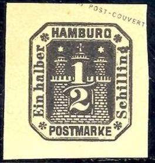
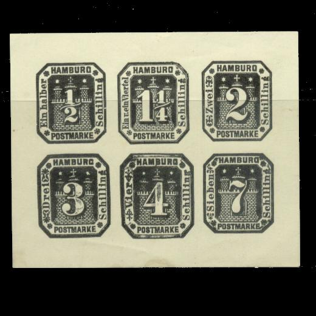
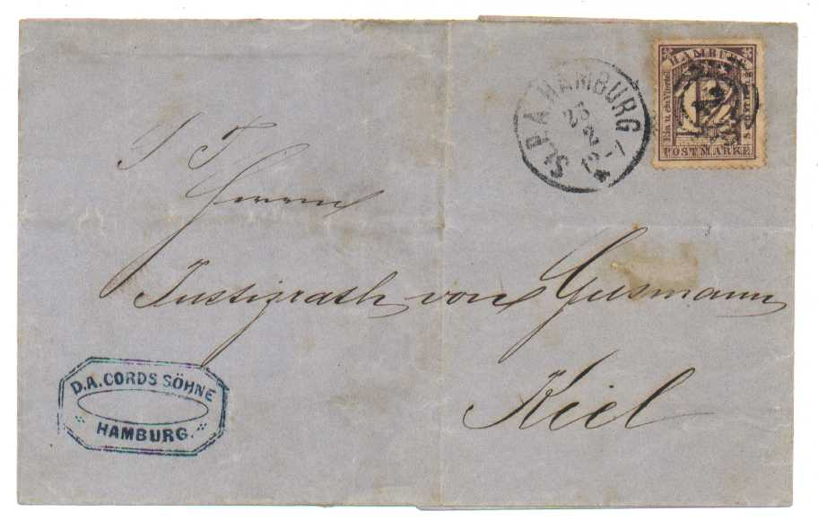

Note: on my website many of the
pictures can not be seen! They are of course present in the
catalogue;
contact me if you want to purchase it.

1/2 Schiling black 1 1/4 Schilling violet 1 1/2 Schilling red 2 Schilling red 3 Schilling blue 4 Schilling green 7 Schilling lilac
These envelopes were manufactured by the Prussian State Printing Office in Berlin.
(Whole envelope, note the impressed large watermark in the
middle)
I've often seen the following sheets with the values 1/2 s, 1 1/4 s, 2 s, 3 s, 4 s and 7 s in black, are they modern reprints?:

I've also seen many cutouts of the above postal stationary, but in the wrong colors. They could be some kind of modern reprints (I've seen them in the 1980's, but they could be much older). If anyone has more information, please contact me.
Another set of reprints was made by H.L.Koch (1876 onwards) and later by A. Bestelmeyer (1881 onwards). All the above cuts in all colors(!) were reprinted. Information obtained from Paul Ohrt 'Handbuch der Neudrucke'.
In 1868 the North German Federation issued a special stamp for Hamburg (see there for more details):
Letter with stamp:

The following label with the inscription 'FR. STADT HAMBURG POSTMARKE' 1 Sch, is a bogus issue:
I have also seen the above 'stamp' with cancel: four parallel bars.
Even different types of these labels seem to exist, the first
image was obtained thanks to Jamiel Stevens. According to him the
'cancel' appears to be printed on the stamp.
A slightly different type, but with the same cancel.
This bogus issue seems to have been first reported in 1865 (Magazin fur Briefmarken-Sammler, II, No.22, February 1865, page 172).
At least the following values were issued: 5 p orange and yellow, 10 p grey and blue, 20 p blue (two shades), 25 p brown, 30 p red and lilac, 40 p green (two shades), 50 p violet and lilac, 60 p red and lilac, 80 p brown and yellow and 50 M brown and blue. I have seen the 50 M with surcharge '1 REICHS- MARK' (as in the picture above).
At least the following values exist: 1 M blue on
blue, 1 M grey on grey (1911), 1 1/2 M brown, 2 M brown and
yellow, 2 M green on grey (1911), 2 1/2 M dark green and green, 2
1/2 M brown on brown (1911), 3 M orange and yellow, 5 M red and
lilac.
Furthermore I have seen the following surcharges: 'WERT 200 MARK'
on 1 M grey on grey, 'WERT 300 MARK' on 2 M green on grey and
'WERT 500 MARK' on 3 M orange.
I have seen the values 10 M brown, 20 M orange, 25 M blue and 30 M green (other values might exist).
Previous fiscal stamps, overprinted with 'Goldmark')
I have seen the values: 20 M green (value and
text in dark green), 5000 M grey (value and text in blue) and
10000 M brown (value and text in red).
With additional text 'Gültig für .... Mark' I have seen: 100 M
(red) on 5 M lilac (value and text in violet), 400 M (red) on 10
M red (value and text in brown), 500 M (black) on 5 M lilac
(value and text in violet) and 2000 M (black) on 10 M red (value
and text in brown).
{kind=link}